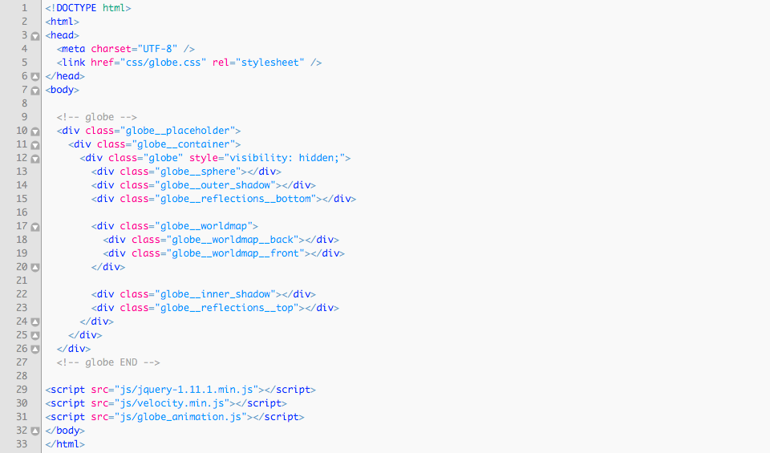
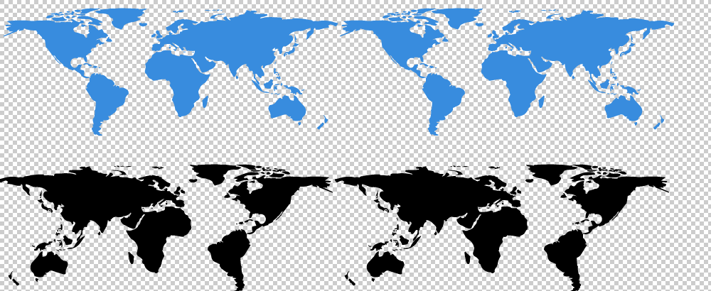
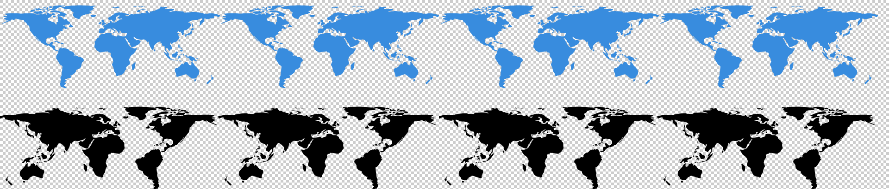
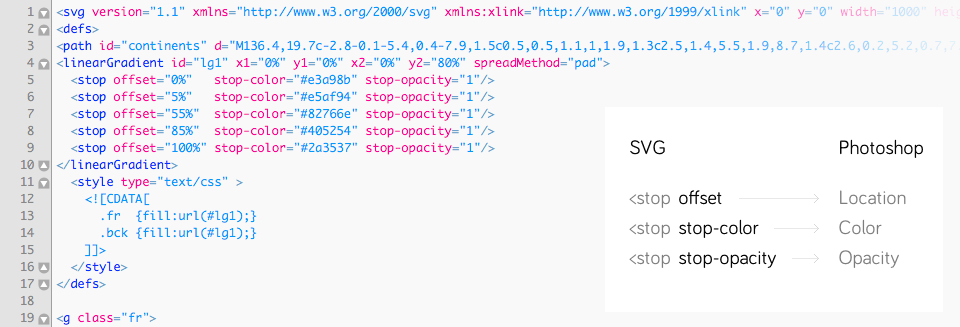
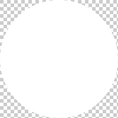
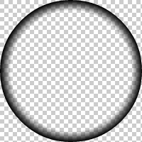
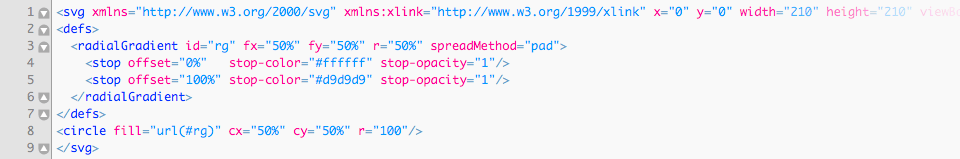
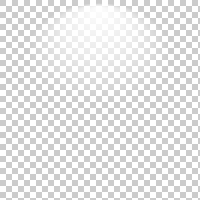
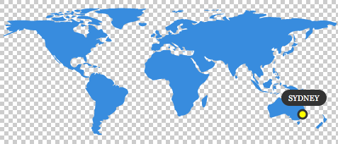
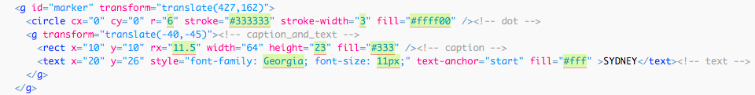

How to change colors of Globe’s elements
How to set visibility / opacity of Globe’s elements
Example with markers - how to add/edit the marker Example with logo carousel - how to add/change logo image Javascript variables explained Animation shows up when the window is scrolled to Globe’s position
Description
Spinning Earth Globe animations with markers and logos' carousel for Desktop and Mobile. Perfect way to visualize location of event/office/store/city or to showcase partners'/sponsors' logos.
- Globe rotation made up with flat world maps animated in circle mask
- Smooth animation (done with Velocity.js)
- Animation speed and sequence controlled with Javascript (defined variables)
- Animation shows up when the Globe becomes visible in the browser
- Resolution independent SVG graphics (perfect for displays with higher pixel density, such as Retina)
- Easy to change width, colors or visibility of elements, animation parameters
- In total: 7 different animation examples + 33 color presets
- Versions:
- globe with map markers (3 examples)
- globe with logo carousel (2 examples)
- just the globe (2 examples)
- Included:
- HTML, CSS, JS, SVG files
- Documentation
- PSD helper
- Browsers:
- For Desktop: IE9, IE10, IE11, Chrome, Firefox, Safari, Opera
- For Mobile: iOS Safari, iOS Chrome, Android Chrome
Files in the bundle
| Folder | Description |
|---|---|
1.1.marker |
Example with marker |
1.2.marker-looped |
Example with marker (looped animation) |
1.3.marker-multiple-globes |
Example with marker (multiple globes) |
2.1.logo-carousel |
Example with logo carousel (looped animation) |
2.2.logo |
Example with single logo (looped animation) |
3.1.just-globe-looped |
Just the globe (looped animation) |
3.2.just-globe |
Just the globe |
worldmap_color_presets |
33 color presets |
psd |
PSD helper file |
documentation |
this file |
Embedding the Globe
These code lines are needed for embedding the Globe into HTML file:
1. HTML code of the Globe instance between these commented lines in <body> section:
<!-- globe -->...<!-- globe END -->
2. Link to CSS file in <head> section
css/globe.css
3. Links to Javascript files just before </body> tag:
js/jquery-1.11.1.min.jsjs/velocity.min.jsjs/globe_animation.js
Note: jQuery is needed for referencing DOM elements and detecting onScroll events.
Basic example of embedded Globe:
Note: it may slightly vary for different examples of the Globe
Globe’s main graphic elements
All graphics are SVG vector files, located in globe_images folder.
| CSS class | SVG filename | |
|---|---|---|
| globe__sphere | sphere.svg | bottommost element |
| globe__outer_shadow | outer_shadow.svg | |
| globe__reflections__bottom | reflections.svg * | |
| globe__worldmap__back | worldmap_2x.svg ** | |
| globe__worldmap__front | worldmap_2x.svg ** | |
| globe__inner_shadow | inner_shadow.svg | |
| globe__reflections__top | reflections.svg * | topmost element |
* Used in two elements / ** Used in two elements, File name might be different in different examples
Fine-tuning individual elements
You might face situations when you just want to alter individual elements’ dimensions, so fine-tuning of SVG elements’ is needed.
<circle> Used in inner_shadow.svg and sphere.svg
r: circle radius (and width at the same time). For example:99.5cx,cy: X, Y position of circle’s center. For example:50%
<ellipse> Used in outer_shadow.svg
The ellipse is centered in cx, cy like the circle. But the radius in the x and y directions are specified by two attributes, not one: The rx and ry attributes. As you can see, the rx attribute has a higher value than the ry attribute, making the ellipse wider than it is tall. Setting the rx and ry attributes the same number would result in a regular circle.
<path> Used in reflections.svg

The translate() function moves a shape. You pass the x and y value to the translate() function inside the parameters.
The scale() function scales a shape up or down in size. The scale() function scales both the shapes dimensions and its position coordinates. Use scale() with combination with translate().
How to change colors of Globe’s elements
Colors can be easily modified by editing respective SVG file in your favorite code editor. You can safely edit any SVG file from folder globe_images.
worldmap_2x.svg
worldmap_4x.svg
Note: Globes with looped continents' animation are using SVG files with "2x" in the name. "4x" files are two times wider with continents repeated 4 times - that is needed to extend the length of rotation (the distance worldmaps are translated to).
Continents might be filled with solid color or linear gradient.
Front continents colors/gradients are defined with CSS class name fr inside <style> node.
Back continents colors/gradients are defined with CSS class name bck inside <style> node.
Solid color example

fill- Fill color can be a hexadecimal RGB value, a regular RGB value, or one of the pre-defined color keywords.
Linear gradient example
The <linearGradient>-element has two nested <stop>-elements. The <linearGradient>-element controls the direction of the gradient and what happens before and after the gradient is applied (the spreadMethod attribute). The <stop>-elements control the colors used in the gradient, how far into the shape the colors start and stop, plus the opacity of the gradient.
Here is a list of the <stop> element attributes:
offset- How far into the shape this color starts (if the first color of the gradient) or stops (if the last color of the gradient). Specified as percentages of the shape the gradient is applied to.
stop-color- The color of this stop-point. The color the gradient changes from / to.
stop-opacity- The opacity of the color of this stop-point. If opacity changes from one stop-point with 1 to another with opacity 0, then the color will gradually become more transparent.
<stop> element attributes' equivalents in Photoshop:
offset > Location
stop-color > Color
stop-opacity > Opacity
Note: in Photoshop opacity values are expressed as percentage, so you'll have to convert them when placing into SVG (divide by 100). For example, 50% in Photoshop will be 0.5 in SVG.
More on SVG Gradients: http://tutorials.jenkov.com/svg/svg-gradients.html
sphere.svg
inner_shadow.svg
Both are oval shapes. Could be filled with solid color, linear gradient or radial gradient.
Radial gradient example
The <radialGradient>-element has nested <stop>-elements. The <radialGradient>-element controls the direction of the gradient. The <stop>-elements control the colors used in the gradient, how far into the shape the colors start and stop, plus the opacity of the gradient.
The <stop> element attributes are the same as for <linearGradient>.
More on SVG Gradients: http://tutorials.jenkov.com/svg/svg-gradients.html
reflections.svg
There are 5 predefined reflections’ gradients in this file.

By default the shape of reflections element uses gradient with ID named gr1. The other are gr2, gr3, gr4 and gr5.
If you want to select another one:
- Open
reflections.svgin code editor - Find the line with code
<path fill="url(#gr1)"...> - Change
gr1togr2,gr3,gr4orgr5. - Save the file.
Additionally you may alter gradient stops’ opacity, colors or create your own gradient.
outer_shadow.svg
Globe’s casted shadow.
globe.psd
For convenience purposes I've included PSD file with globe elements (on separate layers) you can play with. There you can tweak colors and gradients and see the results instantly. Then just transfer the color codes into respective SVG files.
- Open
globe.psd - Select element's layer (named
inner.shadow,continents.front,continents.backorsphere) - From Photoshop menu choose Layer > Layer Style > Blending Options > Gradient Overlay
- Click on "Gradient"
- Click on "Stops" (red boxed in picture below)
- Modify values, drag them to reposition
How to set visibility / opacity of Globe’s elements
Visibility - do it in HTML
Open globe.html and find code line with <div> element you don't want to be visible. You may safely remove any of these lines:
- <div class="globe__sphere"></div>
- <div class="globe__outer_shadow"></div>
- <div class="globe__reflections__bottom"></div>
- <div class="globe__worldmap__back"></div>
- <div class="globe__worldmap__front"></div>
- <div class="globe__inner_shadow"></div>
- <div class="globe__reflections__top"></div>
Or wrap in <!-- --> to temporarily hide it. For example: <!-- <div class="globe__sphere"></div> -->
Opacity - do it in SVG
I've noticed that it's better to set opacity right in the SVG files rather than in CSS in order to avoid possible conflicts.
- Open corresponding SVG file, find the
opacityparameter - Change
opacityto the new one, for exampleopacity="0.5"oropacity: 0.5;if it's inline CSS.
Possible values are from 0 to 1.
How to resize the Globe
- Open
globe.cssfile with your favorite code editor - Find
.globe__containerand uncomment transform and transform-origin properties between/*and*/transform: scale(0.5);transform-origin: 0 0;
- Parent element
.globe__placeholderalso must be resized to match dimensions of both elements. The new height and width is calculated by multiplying transform's scale() property, e.g. 200px * 0.5 = 100pxwidth: 100px;height: 100px;
- Save the file.
Example with markers - how to add/edit the marker
Open worldmap_4x_sydney.svg file with your favorite code editor. Additionally you may open same file with your browser and refresh there to see changes you've made in SVG instantly.
- Position of entire marker element (
g id="marker") with translate():
1st value: on X axis / 2nd value: on Y axis
0,0- the dot will be at the very top/left position
473,200- the dot will be placed at the very bottom/right position - Change city name (inside
textnode) - Adjust caption width (
rectinsideg id="marker"element, width attribute) - Adjust caption's position (
gchild element ofg id="marker"element, translate() 1st value: X axis) - Save the file.
Additionally you may edit parameters of these elements:
Change dot (circle node inside g id="marker" element):
- color:
fillattribute - size (circle radius):
rattribute - stroke width:
stroke-widthattribute - stroke color:
strokeattribute
Caption (rect node inside g id="marker" element):
- borders:
rxattribute - height:
heightattribute - color:
fillattribute
Text (text node inside g id="marker" element):
- font-family: CSS attribute
- font-size: CSS attribute
- color:
fillattribute
Example with logo carousel - how to add/change logo image
Additional HTML code lines are added in example with logo carousel. In example below 4 images are rotated. Notice 4 <div> elements inside parent <div> with class name globe__worldmap__logos.
To add the 5th logo, edit globe.html HTML file with your favorite code editor:
- Find the line with
.globe__logo4element - Duplicate it and change class name to
.globe__logo5 - Save the file.
Then edit globe.css CSS file with your favorite code editor:
- Find the line with
.globe__logo4 - Duplicate it and change class name to
.globe__logo5 - Change CSS properties to match the style:
background-color,background-image(url) - Set
widthandheightof new image - Set
margin-leftandmargin-topfor new image:
- 'margin-left' is calculated by dividing 'width' value by 2 with added minus sign
- 'margin-top' is calculated by dividing 'height' value by 2 with added minus sign
- Save the file.
Note: in the examples SVG files with logos are used, but also any bitmap format will work: PNG, JPG or GIF.
Javascript variables explained
All the variables you can safely modify in globe_animation.js and play with are listed between two commented lines with text “VARIABLES SETUP”. Below comes every variable explained. Note: additionally all these variables are commented in the JS file.
globe_intro_delay Number
Time to wait before intro animation after Globe is visible (ms). Delayed function is globe_intro(). For example: 500
globe_intro_duration Number
Globe intro animation duration (ms). For example: 1000
globe_intro_easing String / Array
Globe intro animation easing. For example: "swing"
- Supported jQuery UI easings:
"swing","linear","easeInSine","easeOutSine","easeInOutSine","easeInQuad","easeOutQuad","easeInOutQuad","easeInCubic","easeOutCubic","easeInOutCubic","easeInQuart","easeOutQuart","easeInOutQuart","easeInQuint","easeOutQuint","easeInOutQuint","easeInExpo","easeOutExpo","easeInOutExpo","easeInCirc","easeOutCirc","easeInOutCirc" - Supported CSS3's named easings:
"ease","ease-in","ease-out","ease-in-out" - Spring physics use example:
[ 250, 15 ]
More about Velocity.js easing functions: http://julian.com/research/velocity/#easing
continents_delay Number
Time to wait before Globe continents' animation (ms). For example: 100
continents_duration Number
Globe continents' animation duration (ms). For example: 2000
continents_easing String / Array
Globe continents' animation easing. For example: "ease"
- Supported jQuery UI easings:
"swing","linear","easeInSine","easeOutSine","easeInOutSine","easeInQuad","easeOutQuad","easeInOutQuad","easeInCubic","easeOutCubic","easeInOutCubic","easeInQuart","easeOutQuart","easeInOutQuart","easeInQuint","easeOutQuint","easeInOutQuint","easeInExpo","easeOutExpo","easeInOutExpo","easeInCirc","easeOutCirc","easeInOutCirc" - Supported CSS3's named easings:
"ease","ease-in","ease-out","ease-in-out" - Spring physics use example:
[ 250, 15 ]
More about Velocity.js easing functions: http://julian.com/research/velocity/#easing
continents_loop_interval Number
Globe rotation loop interval. For example: 16000
logo_loop_interval Number
Logo rotation loop interval (ms). For example: 3000
logo_in_params, logo_out_params Arrays
1st Number - delay in multiseconds (ms). For example: 0
2nd Number - duration in multiseconds (ms). For example: 1000
3rd String - easing. For example: "swing"
rotation_length Number
Globe rotation length (positive/negative values). If set to '0', there will be no rotation. If value is negative, rotation will be to opposite side. Don’t set this value too big, otherwise continents might not be visible. For example: 120
svg_marker_cx Number
Marker position on X axis. Same as translate X value from SVG file worldmap-x4.svg. Line (for example) <g id="marker" transform="translate(120,0)" > Values from 0 to 473. For example: 120
globe_intro_delay_multiplier Number
Globe intro delay multiplier. Used in example with multiple globes. For example: 0.15
If set to 0: all globes are animated altogether (at the same time)
If set to 1: each globe is animated only after the last one is completed
Animation shows up when the window is scrolled to Globe’s position
Right from the box animation is playing only when the Globe is visible. Function isScrolled is responsible for doing that (additionally uses isScrolledIntoView)
- First check of scroll position is just after page loaded:
$(window).load(isScrolled); - And then after each scroll on a page:
$(window).scroll(isScrolled);
When Globe is visible in browser, intro animation is played and scroll event is unbind: $(window).unbind('scroll'); to stop future detection of scroll position.
SVG files require proper web server MIME-type configuration
If SVG files don't show up on web, the server doesn't serve MIME types for SVG files correctly. You should configure server appropriately. There are several ways to do it, depending upon the server type, and your access to server settings.
For example, in Apache server it's done by editing .htaccess configuration file that is hidden - make sure your FTP client shows hidden files. If your server does not have such a file, create a file and name it “.htaccess”, and associate the SVG file extensions with the correct MIME Type; if the file already exists, you can simply add the correct entries to it. The particular line you should add are:
AddType image/svg+xml svg
The .htaccess file should be placed in the directory that contains the SVG file, or any parent directory.
More on this subject: http://www.w3.org/services/svg-server/
Notes
Animations are done with the help of Velocity.js animation library by Julian Shapiro (MIT license)
The original map is taken from the NASA website as a source.